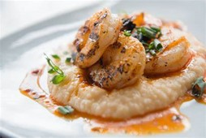
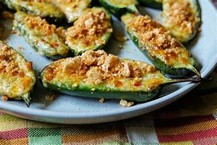
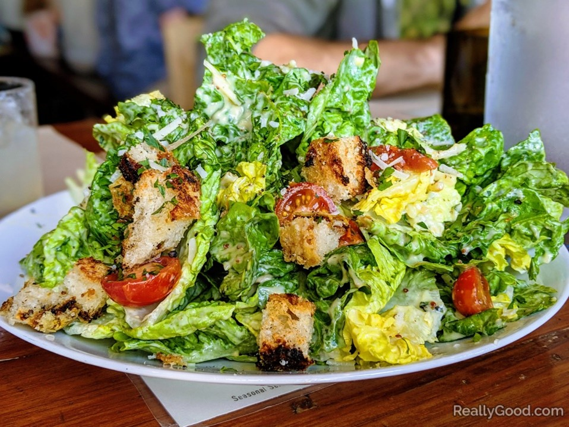
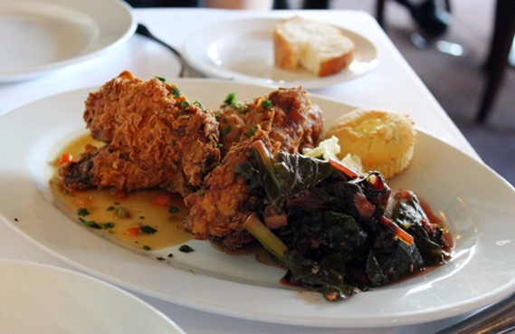
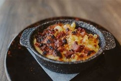
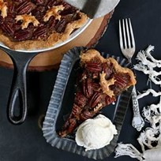
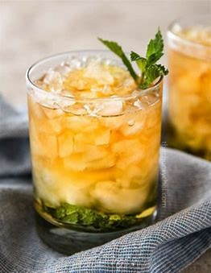

<!DOCTYPE html>
<html lang="en">
<head>
    <meta charset="UTF-8">
    <meta name="viewport" content="width=device-width, initial-scale=1.0">
    <title>South Bound - Menu</title>
</head>
<body>
    <footer>
        <nav>
        <ul>
            <li><a href="">Home</a></li>
            <li><a href="">Menu</a></li>
            <li><a href=""> Reservation</a></li>
            <li><a href="">Location</a></li>
            <li><a href="">Contact Us</a></li>
        </ul>
    </nav>
    <p>Appetizers</p>
        <p>Shrimp and Grits Croquettes: Crispy croquettes filled with creamy grits and succulent shrimp, served with a zesty remoulade.<br>
            
            <p> Pimento Cheese Stuffed Jalapeños: Spicy jalapeños stuffed with a blend of sharp cheddar and creamy pimento cheese, baked to perfection.</p>
            
            <p>Fried Green Tomatoes: Tangy green tomatoes coated in a seasoned cornmeal crust, fried to a golden brown, and served with a spicy aioli.</p>
       <br> <p>Soups and Salads</p>
        <p>Low Country Crab and Corn Chowder: A hearty chowder featuring lump crab meat, sweet corn, and a rich broth with a hint of smoky bacon.</p>
      <p>Southern Caeser Salad: Crisp romaine lettuce, homemade cornbread croutons, and shaved Parmesan, dressed in a tangy buttermilk Caesar dressing.</p>
      
      <br><p>Main Courses</p>
       <p>Buttermilk Fried Chicken: Crispy on the outside, tender on the inside, our buttermilk-fried chicken is served with collard greens and mashed sweet potatoes.</p>
       
       <p>Shrimp and Grits: A Southern classic featuring plump shrimp, Andouille sausage, and creamy stone-ground grits, topped with a flavorful tomato gravy.</p>
        <p>Smoked Pork Belly Mac 'n' Cheese: Creamy mac 'n' cheese loaded with smoky pork belly and baked to perfection, creating the ultimate comfort food.</p>
        
        <br><p>Desserts</p>
        <p>Bourbon Pecan Pie: A Southern staple with a twist, our pecan pie is infused with the rich flavor of Kentucky bourbon, served with a dollop of whipped cream.</p>
       <p>Sweet Potato Bread Pudding: A decadent bread pudding made with sweet potatoes, drizzled with a bourbon caramel sauce and served warm.</p>
        
        <br><p>Drinks</p>
        <p>Southern Mint Julep: A refreshing blend of fresh mint, bourbon, and simple syrup served over crushed ice.</p>
        
        <p>Sweet Tea Lemonade: The perfect fusion of sweet tea and tart lemonade, a quintessential Southern sip.</p>
        <br><p>Join us at South Bound Restaurant for a culinary journey through the heart of the South. Our menu is crafted with passion and pride, ensuring each dish is a celebration of Southern flavors and hospitality.
        </p>
</footer>
</body>
</html>